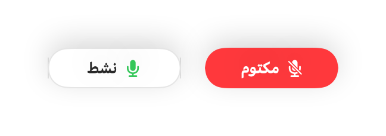

كيفية كتم صوت محادثات Slack من أي تطبيق على Mac
تظهر عناصر التحكم في محادثات Slack الجماعية داخل نافذة صغيرة يسهل فقدانها خلف نوافذ العمل، ولا يعمل اختصار كتم الصوت إلا إذا كان Slack في المقدمة.
يكتم Muffle صوت الميكروفون في Slack وكل تطبيق آخر باختصار واحد أو بضغطة على AirPods، أينما كنت على جهاز Mac.
كتم صوت محادثة Slack من أي مكان
- 1
ثبّت Muffle واسمح بالوصول إلى الميكروفون.
- 2
ابدأ محادثة صوتية في Slack أو انضم إليها.
- 3
اضغط على Control-Option-M أو على ساق AirPods لكتم الصوت.
- 4
ألقِ نظرة على شريط القوائم: اللون الأحمر يعني أنه لا أحد يمكنه سماعك.

- يعرض المتحكم المصغّر العائم حالة الميكروفون أثناء كل محادثة صوتية.
- اضغط مطولاً على الاختصار للتحدث سريعًا مع بقاء الصوت مكتومًا في بقية الوقت.
الأسئلة الشائعة
هل يعمل مع تطبيق Slack وSlack على المتصفح؟
نعم. يعمل Muffle على كتم صوت الميكروفون نفسه، لذا فهو يعمل في كليهما.
هل سيرى زملاء العمل أن صوتي مكتوم؟
قد يُظهر Slack أن المايك مفعّل، لكنهم لن يسمعوا شيئًا طالما أن Muffle يكتم صوتك.